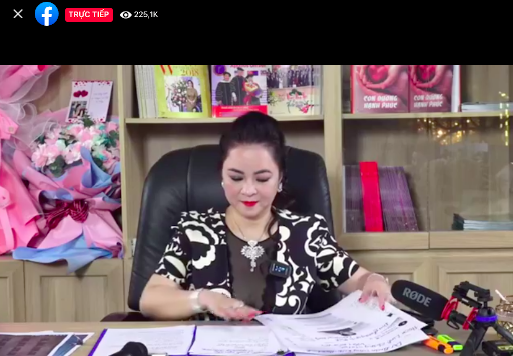
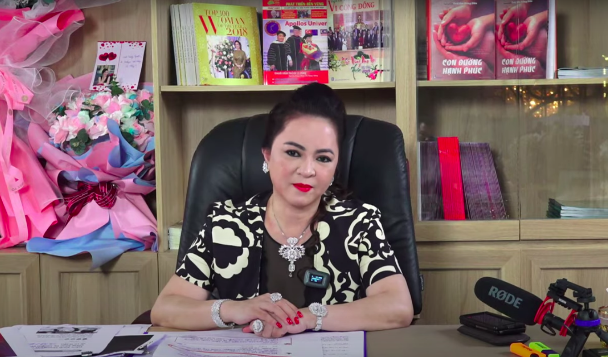
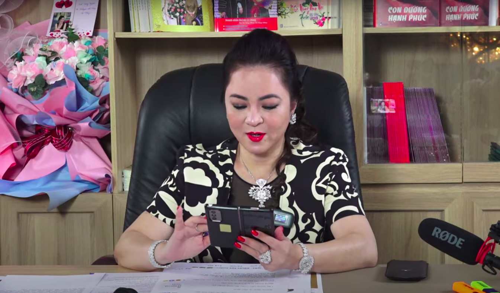

Tối 25.5, bà Nguyễn Phương Hằng trở thành tâm điểm trên mạng xã hội khi tiếp tục livestream 'vạch trần' các nghệ sĩ trong showbiz. Sự kiện thu hút hàng trăm nghìn lượt xem trên YouTube, Facebook, gây nên làn sóng bàn tán sôi nổi. >
Livestream của doanh nhân Nguyễn Phương Hằng tối 25.5 gây 'bão' mạng xã hội
Thời gian qua, doanh nhân Nguyễn Phương Hằng liên tục gây xôn xao dư luận khi thực hiện hàng loạt buổi livestream “bóc phốt” ông Võ Hoàng Yên cùng nhiều nghệ sĩ trong showbiz Việt. Tối 25.5, sự kiện livestream của nữ đại gia này tiếp tục thu hút sự quan tâm từ đông đảo dân mạng Việt Nam. Livestream được chia sẻ trên ba kênh chính: Facebook CEO Nguyễn Phương Hằng, tài khoản Facebook của Trường Đua Đại Nam và kênh YouTube Trường Đua Đại Nam.
Lượng người theo dõi livestream của bà Nguyễn Phương Hằng trên ba kênh phát trực tiếp biến động liên tục theo từng phút và chưa có dấu hiệu dừng lại
Không chỉ gây sốc với những thông tin, đánh giá liên quan đến vụ hơn 13 tỉ tiền cứu trợ của nghệ sĩ Hoài Linh, livestream mới nhất của vợ ông Huỳnh Uy Dũng còn khiến nhiều người choáng ngợp bởi lượng người xem “khủng”. Theo đó, livestream trên tài khoản Facebook mang tên bà Hằng thu hút hàng trăm nghìn tài khoản theo dõi cùng lúc. Phần phát trực tiếp của doanh nhân khét tiếng này trên trang Facebook CEO Nguyễn Phương Hằng có thời điểm ghi nhận đến hơn 225.000 người cùng theo dõi và hơn 32.000 lượt chia sẻ. Con số này nhanh chóng lập kỷ lục về lượng người xem livestream trên Facebook Việt Nam của một cá nhân. Trước đó, nền tảng này từng ghi nhận mức kỷ lục hơn 161.000 người xem livestream của Hoa Vinh đạt được hồi 2018.
Chưa kể, Facebook của Trường Đua Đại Nam cũng thu hút hàng chục nghìn người theo dõi livestream và hơn 15.000 lượt chia sẻ. Ngoài sở hữu lượng lớn khán giả hùng hậu trên Facebook, phần livestream của bà Hằng phát trên kênh YouTube Trường Đua Đại Nam cũng thu hút lượng người xem “khủng” không kém. Thời điểm 20 giờ 15 phút, livestream trên YouTube "kéo" hơn 163.000 người vào xem cùng lúc, phần bình luận nhảy liên tục với cơn bão bàn tán từ khán giả.
Bà Hằng có những phát ngôn nhắm thẳng vào Hoài Linh cùng nhiều nghệ sĩ khác. Trong quá trình livestream, nữ doanh nhân bất ngờ khi được nhiều khán giả chuyển tiền "mời cà phê"
Những nội dung livestream của bà Nguyễn Phương Hằng đa số xoay quanh vụ việc nghệ sĩ Hoài Linh chưa thực hiện công tác từ thiện dù đã nhận quyên góp hơn 13 tỉ đồng từ 6 tháng nay, cùng với nhiều lời tố về lối sống, đời tư với lời lẽ nặng nề, chưa được kiểm chứng nhưng làm dân mạng khá sốc, hoang mang. Đáng chú ý, nữ doanh nhân đến từ Bình Dương còn dùng kiến thức kinh doanh để chỉ ra những khoản lợi từ việc "ngâm" hơn 13 tỉ đồng trong tài khoản hơn 6 tháng qua, và khẳng định Hoài Linh chi hàng trăm triệu vào việc riêng là vi phạm... Ngoài ra, nữ đại gia này cũng "đá xoáy" các nhân vật khác như: ông Võ Hoàng Yên, NSND Hồng Vân, Đàm Vĩnh Hưng, ca sĩ Vy Oanh… Hàng loạt thông tin được bà Nguyễn Phương Hằng chia sẻ liên tục nhận được sự quan tâm của công chúng và gây bàn tán sôi nổi trên mạng xã hội. Những câu nói ấn tượng của vợ ông Dũng "lò vôi" cũng "phủ sóng" khắp các diễn đàn trực tuyến, dân mạng tích cực "bắt trend".
Tin Liên Quan
Link bài gốc